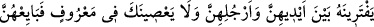
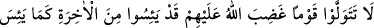
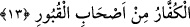

MÜ’MİN KADINLARIN
BİATI
12. Ey Peygamber! İnanmış kadınlar, Allah’a hiçbir şeyi ortak koşmamak,
hırsızlık yapmamak, zinâ etmemek, çocuklarını öldürmemek, elleriyle ayakları
arasında bir iftira uydurup getirmemek, iyi işi işlemekte sana karşı gelmemek
hususunda sana bey’at etmeye geldikleri zaman, bey’atlarını kabul et ve onlar için
Allah’tan mağfiret dile. Şüphesiz Allah, çok bağışlayandır, çok esirgeyendir.
13. Ey îman edenler! Kendilerine Allah’ın gazab ettiği bir kavmi dost edinmeyin.
Zira onlar, kâfirlerin kabirlerdekilerden (onların dirilmesinden) ümid kestikleri
gibi âhiretten ümid kesmişlerdir.
“Ey Peygamber!” Bu ilahî hitâb, yücelten ve şeref bahşeden bir nidadır. “İnanmış
kadınlar, Allah’a hiç bir şeyi ortak koşmamak, hırsızlık yapmamak, zinâ etmemek,
çocuklarını öldürmemek, elleriyle ayakları arasında bir iftira uydurup getirmemek,
iyi işler işlemekte sana karşı gelmemek hususunda sana bey’at etmeğe geldikleri
zaman…” Yâni sana bey’at etmeyi kasdederek geldiklerinde...
Bu âyet-i kerîme Mekke fethedildiği gün nâzil olmuştur. Rasûlullah (a.s.) erkeklerle
bey’ati tamamladıktan sonra kadınların bey’atini kabule başlamıştı. Bu olaya Beyat adı
verilmiştir. Çünkü, bey’at eden kimse kendisini cennet karşılığında satmış oluyor. Bu
sebeple, mufâale vezninde gelen mübâyea kelimesi bey’ kökündendir. Alışveriş
sırasında insanlar, işlemleri sağlam ve kalıcı olması için birinin elini diğerinin eli
üzerine koyması, alan ve satanın âdetlerindendir. İşte buna benzetilerek, sağlam ve
kalıcı olması için birbirileriyle ahidleşen kimselerin bu müahede olayına mübâyea adı
verildi. O halde ümmetin Peygamberlerine mübayeası, ona itâat etmeyi ve emirlerine ve
hükümlerine kesin olarak uyacaklarını ve ona yardım edeceklerini kabul etmek, bu
yükümlülüğü kesin olarak yerine getirmektir. Peygamberin ümmetin bey’atini kabul
etmesi ise, onlara sevab ve mükâfât vaad etmesi, onların yönetimini ve işlerini takib